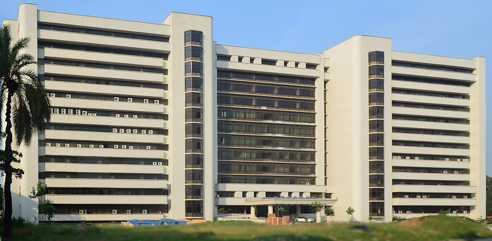

About
I work on machine learning for biology and medicine, mostly with deep generative models and graph neural networks. I teach undergraduate computer science at BUET as an Adjunct Lecturer, and I am a Research Assistant in the same department. I completed my B.Sc. in Computer Science and Engineering at BUET in 2026.
Research
All researchscCrossGEN: cross-organ single-cell translation
Some organs are hard to sample from a living donor. Can we generate their cells from an organ that is easy to sample?
- Dr. Atif Hasan Rahman
- Dr. Md. Abul Hassan Samee
Deterioration pathways from ICU data
A risk score says which ICU patient is at risk, not why. This project traces the events that lead there.
- Dr. Atif Hasan Rahman
- Dr. Sadia Sharmin
Multi-omics disease prediction
Most patients have only one type of omics data measured. What can we predict, and recover, from that alone?
- Nafis Tahmid
Engineering projects
All projects



Bangladesh University of Engineering and Technology
B.Sc. in Computer Science and Engineering, 2022 to 2026
- CGPA
- 3.97 out of 4.00
- Class position
- 7th of 120
Now teaching at BUET as an Adjunct Lecturer
Photo: ECE Building, BUET by Sajid Muhaimin Choudhury, CC BY-SA 3.0.